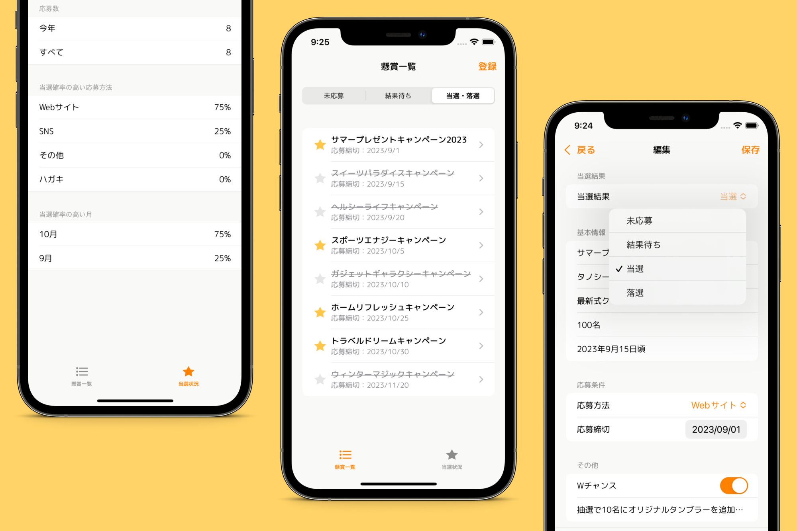

Development
懸賞ノート
「懸賞ノート」とは、iPhone向けに開発されたアプリケーションです。毎日、家事や育児に忙しい主婦の方々が、日常の中で少しの息抜きや楽しみを感じられるようデザインされています。懸賞は私たちの生活に小さなワクワクをもたらしてくれますが、その情報を効率的に整理・管理するのはなかなか難しいもの。このアプリでは、懸賞の応募ステータスを「未応募」「結果待ち」「当選・落選」として一元的に管理することができ、締切日が近い懸賞情報を優先して一覧表示する機能も備わっています。その結果、応募を忘れることなく、忙しい主婦の皆さんの大切な時間を有意義に使うサポートをすることができます。このアプリを通じて、忙しい日常の中での小さな楽しみを、心ゆくまで楽しんでいただけることを願っています。

プライバシーポリシー